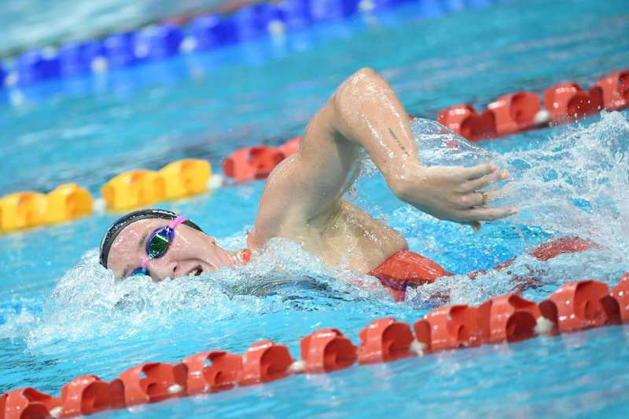

World Cup Westmont - Day Three Finals: Lani Pallister Pops Aussie Record in 1500 Freestyle
📅 October 19, 2025
🏊 Swimming World Magazine
"Just one session remains of the World Cup stop. Lani Pallister achieved a remarkable performance in the women's 1500-meter freestyle event, setting a new Australian national record."

📖 AI-Generated Summary
During the World Cup swimming competition in Westmont, Australian swimmer Lani Pallister achieved a remarkable performance in the women's 1500-meter freestyle event, setting a new Australian national record with a time of 15:13.83. This achievement places her as the second-fastest performer in history for this distance, trailing only American swimming legend Katie Ledecky, who holds the world record at 15:08.24. Pallister's performance represented a significant improvement of nearly eight seconds from her previous Australian record of 15:21.43, which she had established at the 2022 World Short Course Championships in Melbourne. The competition featured several other notable performances, including American Regan Smith equaling her world record in the 100-meter backstroke and setting an American record in the 200-meter butterfly, while Australian teammate Mollie O'Callaghan broke the world record in the 200-meter freestyle. In the 1500-meter freestyle final, Pallister finished well ahead of second-place finisher Erika Fairweather of New Zealand, who clocked 15:30.22. The event was part of the third day of finals at the World Cup stop in Westmont, with one remaining session scheduled. Other notable swimmers competing included Americans Shaine Casas, who won the 400-meter individual medley, and Carson Foster, who placed second in that event. The competition demonstrated the high level of international swimming talent currently competing on the World Cup circuit, with multiple national and world records being challenged throughout the event.
The longest swimming event in Olympic competition, requiring exceptional endurance and pacing strategy. Pallister's record-breaking performance demonstrates her superior stamina and technical proficiency.
Australian record
The fastest time ever achieved by an Australian swimmer in a particular event. Pallister's breaking of this record by nearly eight seconds represents a significant milestone in Australian swimming history.
World Cup stop
An individual competition within the FINA Swimming World Cup series, which consists of multiple meets across different global locations where swimmers earn points toward overall series standings.
📚 Background Reading
The FINA Swimming World Cup is an international series of swimming competitions organized by World Aquatics (formerly FINA) that takes place annually across multiple global locations. These events feature both short course (25-meter pool) and long course (50-meter Olympic-size pool) competitions, with swimmers earning points based on their performances to qualify for overall series rankings and prize money. The 1500-meter freestyle is one of swimming's most demanding events, requiring exceptional cardiovascular endurance and mental fortitude. Historically dominated by swimmers like American Katie Ledecky, who holds the world record, this distance event has seen increasing competition from athletes worldwide. Australian swimming has a rich history in distance events, with swimmers like Kieren Perkins and Grant Hackett achieving legendary status. National records in swimming represent the fastest time ever achieved by a swimmer from that country and are significant milestones in an athlete's career. The ranking of 'performers in history' refers to where a swimmer's time places them among all athletes who have ever competed in that event.
💡 Opens detailed analysis in a new tab with full AI summary, smart questions, and two-sided discussion
❓ Test Your Understanding (5 Questions)
⚖️ Two-Sided Discussion
✅ Record-breaking Perspective
Frequent record-breaking shows continuous advancement in training methodologies and athletic performance
New technologies and improved understanding of sports science are pushing human performance boundaries in swimming
🤔 Alternative Perspective
Modern swimming records may reflect specialized competition conditions that advantage record attempts
The focus on records might overshadow the development of consistent championship performance across multiple events
🔄 Synthesis:
The tension between these perspectives highlights the complex nature of evaluating swimming achievements in the modern era. Pallister's remarkable eight-second improvement on her own national record certainly represents significant athletic development, potentially reflecting advancements in distance swimming training, technique refinement, and race strategy. However, questions remain about how different competition contexts—World Cup events versus major championships—might influence performance outcomes. The World Cup circuit's structure, with its focus on individual performances across multiple meets, may create optimal conditions for record attempts through careful event selection and preparation. Meanwhile, the historical significance of becoming the second-fastest performer ever must be balanced against the need for consistent championship performances when facing the world's best competitors simultaneously. This balanced approach honors the sport's history of achievement while safeguarding its future.
💬 Your Thoughts & Analysis
📝 Instructions: Answer the quiz above. Then share your own argument below about whether you agree with the discussion. The AI will check your spelling, grammar, and provide feedback.